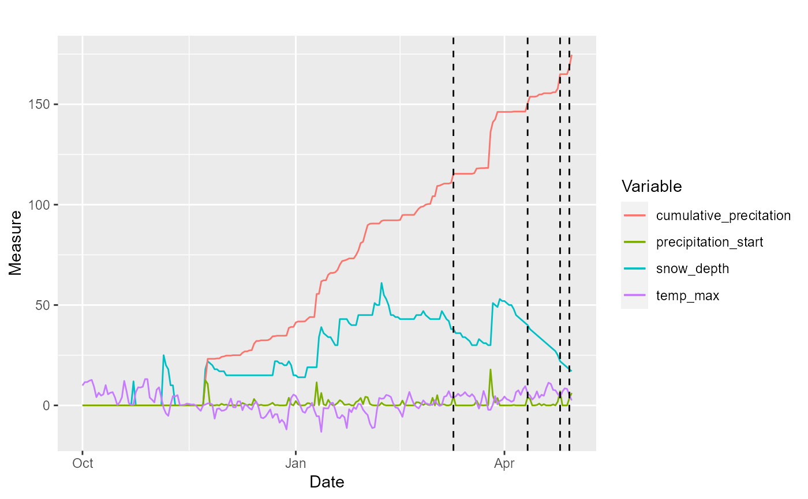

analyze_weather.RdThe function analyze_weather calculates some proxies for weather conditions based on
time series of snow depth, precipitation, and minimum, maximum, and average
temperature for a given year. The functions n_days,
n_events, and duration_events calculate the number of days,
number of events, and duration of events of type 3 and 4 based on
the output of the function analyze_weather.
analyze_weather( date, snow_depth, precipitation, temp_min, temp_max, temp_avg, start = c("first_permanent_snow", "first_date", "other date")[1], plot_first_snow = FALSE, set_start = NULL, ... ) n_days(weather_analyzed, event = 3, first_half = TRUE) n_events(weather_analyzed, event = 3, first_half = TRUE) duration_event(weather_analyzed, event = 3, first_half = TRUE)
| date | date object. vector. Vector of dates in a time series of a given winter. |
|---|---|
| snow_depth | numeric. vector. Daily snow depth, in mm. |
| precipitation | numeric. vector. Precipitation accumulated each day, in mm. |
| temp_min | numeric. vector. Minimum daily temperature, in Celsius. |
| temp_max | numeric. vector. Minimum daily temperature, in Celsius. |
| temp_avg | numeric. vector. Average daily temperature, in Celsius. |
| start | character. Whether the analysis should be done from the
"first_permanent_snow", from the "first_date" of the time series, or from
"other_date". In the first case, it uses the function
|
| plot_first_snow | logical. Whether or not to plot the time series of snow and the estimated start for analyzing the time series |
| set_start | POSIX. Starting date of the analysis, in case |
| ... | other parameters for the functions
|
| weather_analyzed | list. output list from the function |
| event | numeric. Which type of event (3 or 4). |
| first_half | logical. Whether to get events from the whole winter (FALSE) or only from the first half of the winter (TRUE), when the effects of these events may be worse. |
A list with three elements:
weather_indicesa data.frame with the original data plus time series of some indices calculated: cumumative precipitation, the ratio between snow and cumulative precipitation, the ratio between cumulative precipitation and snow, the difference between cumulative precipitation and snow, and when events 3 and 4 happened.
events3a list with information about events 3. See the output from the function
identify_winter_event3.
events4a list with information about events 4. See the output from the function
identify_winter_event4.
Lundqvist, H., Norell, L., Danel, O. 2007. Multivariate characterisation of environmental conditions for reindeer husbandry in Sweden. Rangifer, 27(1): 5-23.
library(tidyverse)#>#> v ggplot2 3.3.2 v purrr 0.3.3 #> v tibble 2.1.3 v dplyr 1.0.2 #> v tidyr 1.0.0 v stringr 1.4.0 #> v readr 1.3.1 v forcats 0.4.0#> Warning: package 'ggplot2' was built under R version 3.6.3#> Warning: package 'dplyr' was built under R version 3.6.3#> Conflicts ----------------------------------------------- tidyverse_conflicts() -- #> x dplyr::filter() masks stats::filter() #> x dplyr::lag() masks stats::lag()data(weather_mittadalen) # select one year weather <- weather_mittadalen %>% dplyr::filter(year == 2015) # analyze weather weather_condition <- with(weather, analyze_weather(date, snow_depth, prec, temp_min, temp_max, temp_avg, start = "first_permanent_snow", plot_first_snow = T))weather_condition#> $weather_indices #> # A tibble: 212 x 13 #> date snow_depth precipitation_s~ temp_min temp_max temp_avg #> <dttm> <dbl> <dbl> <dbl> <dbl> <dbl> #> 1 2014-10-01 00:00:00 0 0 -1.6 9.9 6.3 #> 2 2014-10-02 00:00:00 0 0 0.8 11.6 5.5 #> 3 2014-10-03 00:00:00 0 0 -1.8 11.6 7.7 #> 4 2014-10-04 00:00:00 0 0 8.9 12.3 11 #> 5 2014-10-05 00:00:00 0 0 9 12.7 10.3 #> 6 2014-10-06 00:00:00 0 0 4 9.2 5.6 #> 7 2014-10-07 00:00:00 0 0 2 4.1 2.5 #> 8 2014-10-08 00:00:00 0 0 1.9 6.3 4.8 #> 9 2014-10-09 00:00:00 0 0 2.5 4.9 3.7 #> 10 2014-10-10 00:00:00 0 0 3.4 5.5 4.1 #> # ... with 202 more rows, and 7 more variables: cumulative_precitation <dbl>, #> # prec_snow_ratio <dbl>, prec_snow_diff <dbl>, snow_prec_ratio <dbl>, #> # snow_prec_diff <dbl>, events3 <dbl>, events4 <dbl> #> #> $events3 #> $events3$events3 #> [1] 0 0 0 0 0 0 0 0 0 0 0 0 0 0 0 0 0 0 0 0 0 0 0 0 0 0 0 0 0 0 0 0 0 0 0 0 0 #> [38] 0 0 0 0 0 0 0 0 0 0 0 0 0 0 0 0 0 0 0 0 0 0 0 0 0 0 0 0 0 0 0 0 0 0 0 0 0 #> [75] 0 0 0 0 0 0 0 0 0 0 0 0 0 0 0 0 0 0 0 0 0 0 0 0 0 0 0 0 0 0 0 0 0 0 0 0 0 #> [112] 0 0 0 0 0 0 0 0 0 0 0 0 0 0 0 0 0 0 0 0 0 0 0 0 0 0 0 0 0 0 0 0 0 0 0 0 0 #> [149] 0 0 0 0 0 0 0 0 0 0 0 0 1 0 0 0 0 0 0 0 0 0 0 0 0 0 0 0 0 0 0 0 0 0 0 0 0 #> [186] 0 0 0 0 0 0 0 1 0 0 0 0 0 0 0 0 0 0 0 0 0 1 0 0 0 1 1 #> #> $events3$n_days #> [1] 5 #> #> $events3$n_events3 #> [1] 4 #> #> $events3$duration_events3 #> [1] 1 1 1 2 #> #> $events3$event_dates #> [1] "2015-03-10 UTC" "2015-04-11 UTC" "2015-04-25 UTC" "2015-04-29 UTC" #> #> $events3$n_event3_date #> [1] 0 0 0 0 0 0 0 0 0 0 0 0 0 0 0 0 0 0 0 0 0 0 0 0 0 0 0 0 0 0 0 0 0 0 0 0 0 #> [38] 0 0 0 0 0 0 0 0 0 0 0 0 0 0 0 0 0 0 0 0 0 0 0 0 0 0 0 0 0 0 0 0 0 0 0 0 0 #> [75] 0 0 0 0 0 0 0 0 0 0 0 0 0 0 0 0 0 0 0 0 0 0 0 0 0 0 0 0 0 0 0 0 0 0 0 0 0 #> [112] 0 0 0 0 0 0 0 0 0 0 0 0 0 0 0 0 0 0 0 0 0 0 0 0 0 0 0 0 0 0 0 0 0 0 0 0 0 #> [149] 0 0 0 0 0 0 0 0 0 0 0 0 1 0 0 0 0 0 0 0 0 0 0 0 0 0 0 0 0 0 0 0 0 0 0 0 0 #> [186] 0 0 0 0 0 0 0 2 0 0 0 0 0 0 0 0 0 0 0 0 0 3 0 0 0 4 4 #> #> $events3$events3_begin #> [1] 0 0 0 0 0 0 0 0 0 0 0 0 0 0 0 0 0 0 0 0 0 0 0 0 0 0 0 0 0 0 0 0 0 0 0 0 0 #> [38] 0 0 0 0 0 0 0 0 0 0 0 0 0 0 0 0 0 0 0 0 0 0 0 0 0 0 0 0 0 0 0 0 0 0 0 0 0 #> [75] 0 0 0 0 0 0 0 0 0 0 0 0 0 0 0 0 0 0 0 0 0 0 0 0 0 0 0 0 0 0 0 0 0 0 0 0 0 #> [112] 0 0 0 0 0 0 0 0 0 0 0 0 0 0 0 0 0 0 0 0 0 0 0 0 0 0 0 0 0 0 0 0 0 0 0 0 0 #> [149] 0 0 0 0 0 0 0 0 0 0 0 0 0 0 0 0 0 0 0 0 0 0 0 0 0 0 0 0 0 0 0 0 0 0 0 0 0 #> [186] 0 0 0 0 0 0 0 0 0 0 0 0 0 0 0 0 0 0 0 0 0 0 0 0 0 0 0 #> #> $events3$n_days_begin #> [1] 0 #> #> $events3$n_events3_begin #> [1] 0 #> #> $events3$duration_events3_begin #> integer(0) #> #> $events3$event_dates_begin #> POSIXct of length 0 #> #> $events3$n_event3_date_begin #> [1] 0 0 0 0 0 0 0 0 0 0 0 0 0 0 0 0 0 0 0 0 0 0 0 0 0 0 0 0 0 0 0 0 0 0 0 0 0 #> [38] 0 0 0 0 0 0 0 0 0 0 0 0 0 0 0 0 0 0 0 0 0 0 0 0 0 0 0 0 0 0 0 0 0 0 0 0 0 #> [75] 0 0 0 0 0 0 0 0 0 0 0 0 0 0 0 0 0 0 0 0 0 0 0 0 0 0 0 0 0 0 0 0 0 0 0 0 0 #> [112] 0 0 0 0 0 0 0 0 0 0 0 0 0 0 0 0 0 0 0 0 0 0 0 0 0 0 0 0 0 0 0 0 0 0 0 0 0 #> [149] 0 0 0 0 0 0 0 0 0 0 0 0 0 0 0 0 0 0 0 0 0 0 0 0 0 0 0 0 0 0 0 0 0 0 0 0 0 #> [186] 0 0 0 0 0 0 0 0 0 0 0 0 0 0 0 0 0 0 0 0 0 0 0 0 0 0 0 #> #> #> $events4 #> $events4$events4 #> [1] 0 0 0 0 0 0 0 0 0 0 0 0 0 0 0 0 0 0 0 0 0 0 0 0 0 #> [26] 0 0 0 0 0 0 0 0 0 0 0 0 0 0 0 0 0 0 0 0 0 0 0 0 0 #> [51] 0 0 0 0 0 0 0 0 0 0 0 0 0 0 0 0 0 0 0 0 0 0 0 0 0 #> [76] 0 0 0 0 0 0 0 0 0 0 0 0 0 0 0 0 0 0 0 0 0 0 0 0 0 #> [101] 0 0 0 0 0 0 0 0 0 0 0 0 0 0 0 0 0 0 0 0 0 0 0 0 0 #> [126] 0 0 0 0 0 0 0 0 0 0 0 0 0 0 0 0 0 0 0 0 0 0 0 0 0 #> [151] 0 0 0 0 0 0 0 0 0 0 0 0 0 0 0 0 0 0 0 0 0 0 0 0 0 #> [176] 0 0 0 0 0 0 0 0 0 0 0 0 0 0 0 0 0 0 0 0 0 0 0 0 0 #> [201] 0 0 0 0 0 0 0 0 0 0 0 NA #> #> $events4$n_days #> [1] 0 #> #> $events4$n_events4 #> [1] 0 #> #> $events4$duration_events4 #> integer(0) #> #> $events4$event_dates #> POSIXct of length 0 #> #> $events4$n_event4_date #> [1] 0 0 0 0 0 0 0 0 0 0 0 0 0 0 0 0 0 0 0 0 0 0 0 0 0 0 0 0 0 0 0 0 0 0 0 0 0 #> [38] 0 0 0 0 0 0 0 0 0 0 0 0 0 0 0 0 0 0 0 0 0 0 0 0 0 0 0 0 0 0 0 0 0 0 0 0 0 #> [75] 0 0 0 0 0 0 0 0 0 0 0 0 0 0 0 0 0 0 0 0 0 0 0 0 0 0 0 0 0 0 0 0 0 0 0 0 0 #> [112] 0 0 0 0 0 0 0 0 0 0 0 0 0 0 0 0 0 0 0 0 0 0 0 0 0 0 0 0 0 0 0 0 0 0 0 0 0 #> [149] 0 0 0 0 0 0 0 0 0 0 0 0 0 0 0 0 0 0 0 0 0 0 0 0 0 0 0 0 0 0 0 0 0 0 0 0 0 #> [186] 0 0 0 0 0 0 0 0 0 0 0 0 0 0 0 0 0 0 0 0 0 0 0 0 0 0 #> #> $events4$events4_begin #> [1] 0 0 0 0 0 0 0 0 0 0 0 0 0 0 0 0 0 0 0 0 0 0 0 0 0 0 0 0 0 0 0 0 0 0 0 0 0 #> [38] 0 0 0 0 0 0 0 0 0 0 0 0 0 0 0 0 0 0 0 0 0 0 0 0 0 0 0 0 0 0 0 0 0 0 0 0 0 #> [75] 0 0 0 0 0 0 0 0 0 0 0 0 0 0 0 0 0 0 0 0 0 0 0 0 0 0 0 0 0 0 0 0 0 0 0 0 0 #> [112] 0 0 0 0 0 0 0 0 0 0 0 0 0 0 0 0 0 0 0 0 0 0 0 0 0 0 0 0 0 0 0 0 0 0 0 0 0 #> [149] 0 0 0 0 0 0 0 0 0 0 0 0 0 0 0 0 0 0 0 0 0 0 0 0 0 0 0 0 0 0 0 0 0 0 0 0 0 #> [186] 0 0 0 0 0 0 0 0 0 0 0 0 0 0 0 0 0 0 0 0 0 0 0 0 0 0 0 #> #> $events4$n_days_begin #> [1] 0 #> #> $events4$n_events4_begin #> [1] 0 #> #> $events4$duration_events4_begin #> integer(0) #> #> $events4$event_dates_begin #> POSIXct of length 0 #> #> $events4$n_event4_date_begin #> [1] 0 0 0 0 0 0 0 0 0 0 0 0 0 0 0 0 0 0 0 0 0 0 0 0 0 0 0 0 0 0 0 0 0 0 0 0 0 #> [38] 0 0 0 0 0 0 0 0 0 0 0 0 0 0 0 0 0 0 0 0 0 0 0 0 0 0 0 0 0 0 0 0 0 0 0 0 0 #> [75] 0 0 0 0 0 0 0 0 0 0 0 0 0 0 0 0 0 0 0 0 0 0 0 0 0 0 0 0 0 0 0 0 0 0 0 0 0 #> [112] 0 0 0 0 0 0 0 0 0 0 0 0 0 0 0 0 0 0 0 0 0 0 0 0 0 0 0 0 0 0 0 0 0 0 0 0 0 #> [149] 0 0 0 0 0 0 0 0 0 0 0 0 0 0 0 0 0 0 0 0 0 0 0 0 0 0 0 0 0 0 0 0 0 0 0 0 0 #> [186] 0 0 0 0 0 0 0 0 0 0 0 0 0 0 0 0 0 0 0 0 0 0 0 0 0 0 0 #> #>n_days(weather_condition, event = 4)#> [1] 0n_events(weather_condition, event = 3)#> [1] 0n_events(weather_condition, event = 3, first_half = F)#> [1] 4# plot weather_condition$weather_indices %>% ggplot(aes(date)) + geom_line(aes(y = snow_depth, color = "snow depth")) + geom_line(aes(y = cumulative_precitation, color = "cum prec")) + geom_line(aes(y = 100*prec_snow_ratio, color = "100*cum prec/snow depth")) + geom_hline(yintercept = 100, linetype = 2) + ylim(0, 250) + labs(x = "Date", y = "Amount (mm)", color = "")#> Warning: Removed 77 row(s) containing missing values (geom_path).# plot with events weather_condition %>% plot_weather(term = c("snow_depth", "cum", "prec", "temp_max")) + geom_vline(xintercept = weather_condition$events3$event_dates, linetype = 2)weather_condition$weather_indices %>% plot_weather(term = c("snow_depth", "cum", "prec", "temp_max")) + geom_vline(xintercept = weather_condition$events3$event_dates_begin, linetype = 2)#> Warning: Unknown or uninitialised column: 'weather_indices'.#> Warning: Unknown or uninitialised column: 'weather_indices'.#> Warning: `select_()` is deprecated as of dplyr 0.7.0. #> Please use `select()` instead. #> This warning is displayed once every 8 hours. #> Call `lifecycle::last_warnings()` to see where this warning was generated.#> Error in UseMethod("select_"): no applicable method for 'select_' applied to an object of class "NULL"# for several years n_weather <- weather_mittadalen %>% tidyr::nest(data = c(date, snow_depth, prec, temp_min, temp_max, temp_avg)) %>% dplyr::mutate( winter_conditions = purrr::map(data, ~ with(., analyze_weather(date, snow_depth, prec, temp_min, temp_max, temp_avg))), n_days3 = purrr::map(winter_conditions, ~ n_days(., event = 3)), n_days4 = purrr::map(winter_conditions, ~ n_days(., event = 4)), n_events3 = purrr::map(winter_conditions, ~ n_events(., event = 3)), n_events4 = purrr::map(winter_conditions, ~ n_events(., event = 4)), duration3 = purrr::map(winter_conditions, ~ duration_event(., event = 3)), duration4 = purrr::map(winter_conditions, ~ duration_event(., event = 4)) ) %>% tidyr::unnest(n_days3:n_events4) n_weather %>% dplyr::select(year, n_days3:n_events4) %>% tidyr::pivot_longer(cols = n_days3:n_events4, names_to = "what", values_to = "val") %>% ggplot(aes(x = year, y = val, color = what)) + geom_line()